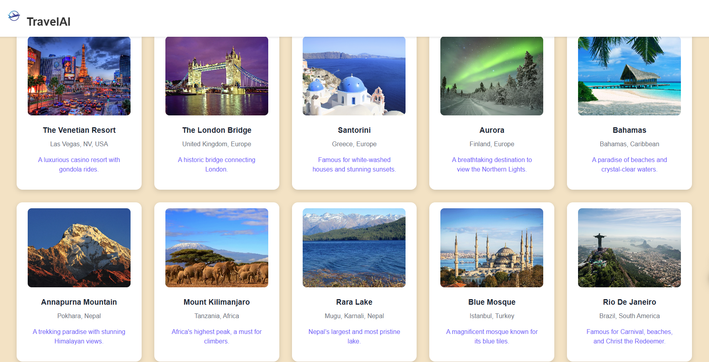

Anmol Acharya
(720)812-6205 | anmolacharya94@gmail.com
Education
University of Texas at Arlington
May 2026
Bachelor of Science in Computer Science
Arlington, Texas
- GPA: 3.92/4.00
- Relevant Coursework: Data Structures and Algorithms, Software Testing, Artificial Intelligence, Database Management, Object-Oriented Programming, Operating Systems, Computer Networks, Computer Graphics
Technical Skills
Programming Languages


.png)


Full Stack


Cloud & DevOps


AI & ML


Databases


Tools & Platforms
.png)


Experience
Undergraduate Research Assistant – SPRLab
February 2022 – Present
University of Texas at Arlington | Arlington, Texas
- Contributing to interdisciplinary research at the Security and Privacy Research Lab (SPRLab), under Dr. Shirin Nilizadeh.
- Analyzing scam victim narratives on social media using AI/ML, NLP, and behavioral analysis to enhance online safety.
- Leveraging large-scale data pipelines, annotated datasets, and GPT-based thematic classification to uncover privacy trends.
- Exploring intersections of cybersecurity, psychology, and AI to understand digital manipulation and user vulnerability.
Projects
Chagas Disease Detection System | GitHub
AI Full-Stack Application
- Developed an AI-based web app to detect Trypanosoma cruzi parasites in blood smear images, achieving 92%+ detection accuracy using YOLOv8.
- Built a FastAPI backend to process 100+ image inferences per minute with <1s average response time.
- Integrated a React frontend with dynamic bounding-box visualization, boosting diagnostic clarity for researchers.
- Containerized the solution using Docker and designed architecture for cloud deployment with scalability in mind.
The Word Search Game (TWSG) | GitHub | Demo
Full-Stack Java Game Development
- Engineered a multiplayer crossword game handling 100+ concurrent players with real-time WebSocket synchronization, reducing message latency by 40%.
- Achieved 95% unit test coverage and improved game function runtime by 60% through optimized state management.
- Designed a modular full-stack architecture using Java, Maven, Spring Boot, REST APIs, and JavaFX for cross-platform deployment.
- Improved Agile sprint velocity by 20% by integrating CI/CD pipelines and implementing Scrum practices for collaborative development.
Serverless Job Tracker (AWS) | GitHub
Cloud-Native Application
- Built a fully serverless job tracking platform with AWS Lambda, DynamoDB, Cognito, and API Gateway, handling 250+ user sessions weekly.
- Reduced backend overhead by 80% using event-driven architecture and modular Lambda functions.
- Integrated OAuth2.0 login via AWS Cognito, enabling secure and scalable authentication with session management.
- Leveraged the Serverless Framework to deploy infrastructure in <3 minutes and enabled seamless CRUD operations with 99.9% uptime>.
TravelAI – Smart Destination Explorer | GitHub
AI-Powered Travel Recommendation

- Designed an AI-integrated travel planner using ReactJS and Tailwind CSS to recommend global destinations.
- Utilized GPT-based filtering to personalize location suggestions based on user mood, budget, and activities.
- Created a visually immersive UI showcasing attractions with real-time data and photo galleries.
- Deployed the frontend using Vite and hosted the project on Netlify with CI/CD automation via GitHub Actions.
Honors / Extracurricular
- Upsilon Pi Epsilon (UPE): Inducted into the Honor Society of UPE, recognized as one of the top 1% of computer Science students for outstanding academic performance and professional development. (Fall 2024 - Present)
- ACM (Association for Computing Machinery) member: Engaged in Hackathons and tech-focused events
- AI/ML Fellow at Cornell Tech: Selected as AI/ML fellow through Break Through Tech Virtual AI program
- Dean's List recipient (UTA College of Engineering): Academic year 2022, 2023, 2024
Visitors: